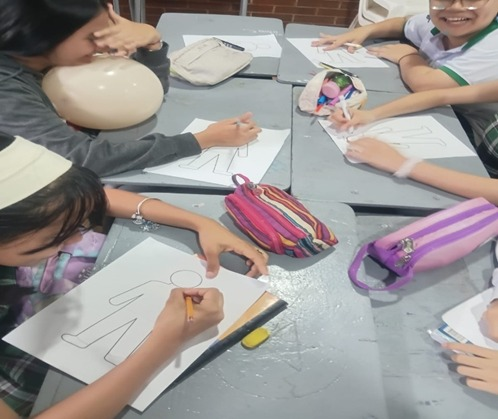
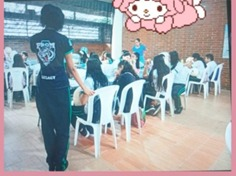
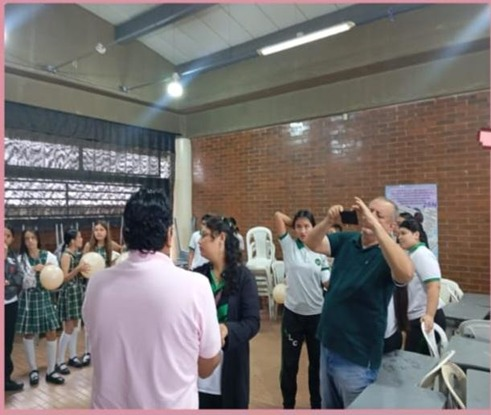
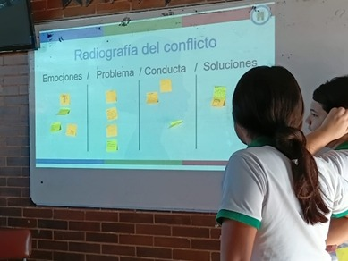
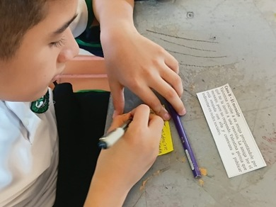
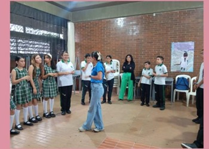

Un espacio formativo enfocado en enseñar a ser líderes, cultivar valores, practicar el autocuidado y descubrir el verdadero potencial interior.
Descubre másConstruyendo una comunidad fuerte, consciente y segura de sí misma.
Soy Más +: Un centro de interés diseñado para acompañar a las mujeres en su desarrollo integral, potenciando su capacidad de liderazgo y su bienestar personal.
Enseñar valores fundamentales, promover el autocuidado y lograr que cada participante conozca profundamente sobre sí misma para brillar con seguridad.
A través de talleres prácticos, círculos de reflexión, dinámicas de liderazgo y herramientas de crecimiento emocional y personal.
Genera tu frase del día y comparte tu palabra clave con la comunidad.
"Conocerse a una misma es el primer paso para transformar el mundo."
Dinámicas diseñadas para el crecimiento colectivo e individual.
Herramientas y dinámicas para guiar con el ejemplo, tomar decisiones asertivas y expresar ideas con firmeza.
Espacios dedicados a cultivar principios éticos, bienestar físico y mental, y el amor propio como prioridad.
Dinámicas de introspección para que cada mujer descubra sus fortalezas, propósitos y un profundo entendimiento de sí misma.
Liderazgo y guía institucional del Centro de Interés.
Coordinación y supervisión general de los Centros de Interés de la institución.
Liderazgo pedagógico, orientación en valores y acompañamiento formativo de las estudiantes.
Apoyo logístico, dinamización de actividades y participación activa en el centro.
Envíanos tu propuesta, inscríbete al centro de interés o ponte en contacto.